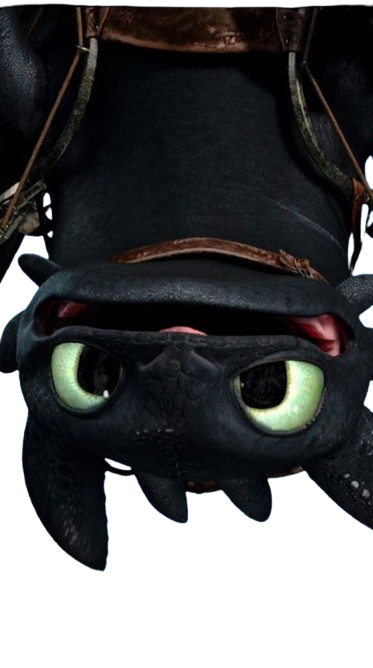
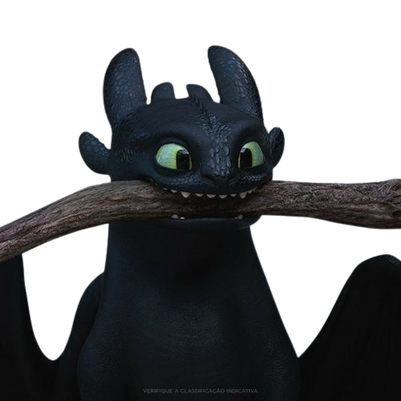
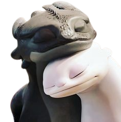

|  | Banguela é um dos personagens na franquia Como Treinar o Seu Dragão. Banguela é o último de sua raça e possui uma
personalidade bondosa e curiosa,
mesmo que às vezes meio teimosa. Com características que são um misto entre
caninas e felinas, ele é o dragão mais poderoso e que faz de tudo para proteger aqueles que ama. Nome:Banguela. Apelido(s):Amigão, Sr. Fúria da Noite, Outra Metade do Soluço, A Cria Diabólica do Raio e da Própria Morte, Demônio. Raça: Fúria da noite. Gênero:Masculino. Treinador:Soluço. |
|
| Ele possui uma aparência única, com escamas escuras e um par de chifres curvos, transmitindo uma aura de mistério e poder. Banguela é conhecido por sua personalidade carismática e leal, demonstrando um forte vínculo emocional com seu treinador, Soluço. | ||
|  | Além de suas habilidades de voo e combate excepcionais, Banguela também exibe uma atitude curiosa e brincalhona, revelando um lado afetuoso e protetor em relação aos seus amigos. Sua capacidade de compreender e se comunicar com os humanos o torna um aliado valioso na busca pela harmonia entre vikings e dragões. | O melhor amigo de Banguela é Soluço, o protagonista do filme. Soluço é um jovem viking corajoso e inventivo, que inicialmente busca provar seu valor como caçador de dragões. |
 |
No entanto, após conhecer Banguela, os dois desenvolvem uma amizade extraordinária e formam uma parceria inseparável, trabalhando juntos para superar desafios e promover a paz entre humanos e dragões. Juntos, Banguela e Soluço demonstram que a amizade verdadeira pode superar qualquer obstáculo! | |
|  | O Fúria da Noite, descobre a existência de uma companheira da mesma espécie, conhecida como Fúria da Luz. Banguela se envolve em uma jornada emocionante para encontrar e se reunir com a Fúria da Luz, enfrentando desafios e perigos ao longo do caminho. | |
| Essa busca não apenas expande o mundo de Banguela, mas também testa sua coragem, lealdade e determinação. Como resultafo de sua união poderosa, Banguela e Fúria da Luz são reconhecidos como reis dos dragões,governando com sua sabedoria, compaixão e coragem. |